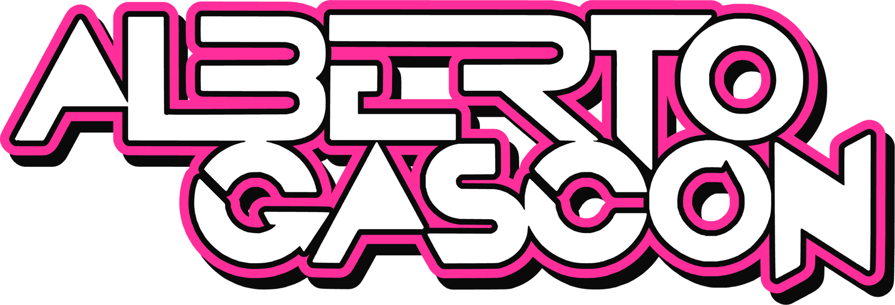
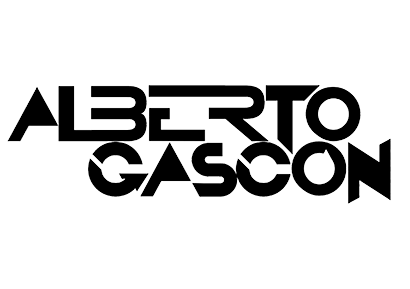
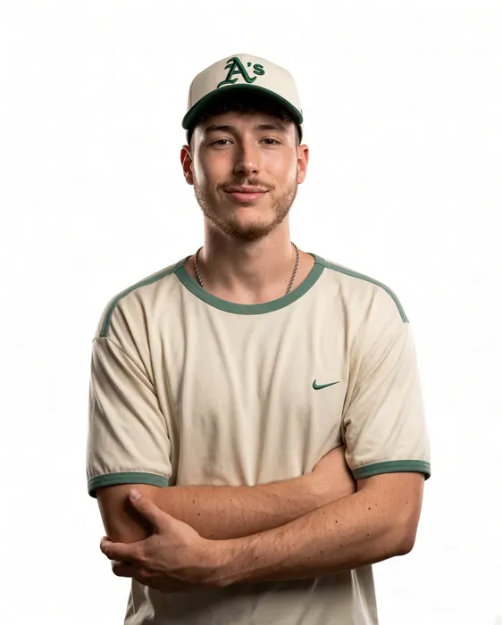

Alberto Gascón (Teruel, 2002) es DJ afincado en Valencia. Pincha desde los 13 años y lleva 8 como profesional, con más de 400 bolos en discotecas, festivales, fiestas patronales, eventos privados y bodas, con cabinas como MotoGP Motorland Alcañiz, MotoGP Cheste o La Encerrona. Técnico de sonido de formación, cuida tanto la pista como cómo suena.
Ficha rápida
En 30 segundos
- Nombre artístico
- Alberto Gascón
- Base
- Valencia (de Teruel)
- Zona de trabajo
- Toda España (sobre todo Teruel, Valencia y Aragón)
- Experiencia
- Pincha desde los 13 · 8 años como profesional · +400 bolos
- Edad
- 24 años (2002)
- Formato
- Discotecas · Festivales · Fiestas patronales · Eventos privados y corporativos · Bodas
- Equipo
- Denon DJ Prime 4 propia, o CDJ-3000 + DJM
- Hospitality
- 4 latas de Coca-Cola con cubitera de hielo · 4 botellas de agua
- Formación
- Técnico de sonido (Comenius · Millenia Estudios)
- Contratación
- Salvaje Booking · contacto@salvajebooking.com
- @albertogascon_
- YouTube
- @albertogascondj
Biografía
Lista para copiar
Alberto Gascón (Teruel, 2002) es DJ afincado en Valencia. Empezó a pinchar con 13 años y lleva 8 como profesional, con más de 400 actuaciones entre discotecas, festivales, fiestas patronales, eventos privados y corporativos y bodas. Trabaja sobre todo en Teruel, Valencia y Aragón y se desplaza a toda España.
Ha pinchado en MotoGP Motorland Alcañiz y en MotoGP Cheste, en La Encerrona, Los Que Faltaban y Los Chachos de Teruel, en Black (Andorra, Teruel), en las Fiestas del Ángel y en las fiestas patronales de la provincia de Teruel.
Además de DJ es técnico de sonido: estudió el Grado Superior de Sonido para Audiovisuales y Espectáculos en Comenius y Producción Musical e Ingeniería de Sonido en Millenia Estudios, en Valencia. Trabaja con su propia Denon DJ Prime 4 o en cabinas con CDJ-3000 y mesas DJM.
Identidad
Logos en alta





Fotos
Fotos de prensa



Fotos en alta resolución para carteles, prensa y redes.
Descargar todas (ZIP · 6 MB) →
Para organizadores
Rider técnico
Opción 1
Lleva su equipo
- Controladora Denon DJ Prime 4 propia.
- Necesita mesa estable, toma de corriente y conexión al equipo de sonido.
Opción 2
Cabina del organizador
- Reproductores Pioneer CDJ-3000 o superiores.
- Mesa DJM-900NXS2, DJM-A9 o DJM-V10.
Hospitality
En cabina
- 4 latas de Coca-Cola con su cubitera de hielo.
- 4 botellas de agua.
Trayectoria
Ha pinchado en
MotoGP MotorlandAlcañiz
MotoGP ChesteValencia
La EncerronaTeruel
Los Que FaltabanTeruel
Los ChachosTeruel
BlackAndorra (Teruel)
Fiestas del ÁngelTeruel
Fiestas patronalesProvincia de Teruel
Contratación
¿Lo quieres en tu cartel?
Sus contrataciones las lleva Salvaje Booking. Escribe a contacto@salvajebooking.com con fecha, sala y horario y te contestan con disponibilidad y presupuesto.